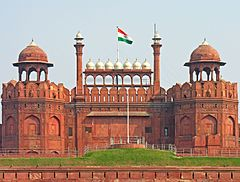

Independence Day pf India
Independence Day of India
The National Flag of India hoisted at the Red
Fort in Delhi; hoisted flags are a common sight
on Independence Day.
Also Called : स्वतंत्रता दिवस
Observed by :  India
India
Type : National
Significance : Commemorates the
independence of India
Date 15 August
Frequency Annual
First time 15th August 1947
Related to Republic Day
Independence Day is annually celebrated on 15 August, as a national holiday in India commemorating the nation's independence from the United Kingdom on 15 August 1947, the UK Parliament passed the Indian Independence Act 1947 transferring legislative sovereignty to the Indian Constituent Assembly. India still retained King George VI as head of state until its transition to full republican constitution. India attained independence following the Independence Movement noted for largely non-violent resistance and civil disobedience led by the Indian National Congress (INC). Independence coincided with the partition of India, in which the British India was divided along religious lines into the Dominions of India and Pakistan; the partition was accompanied by violent riots and mass casualties, and the displacement of nearly 15 million people due to religious violence. On 15 August 1947, the first Prime Minister of India, Jawaharlal Nehru raised the Indian national flag above the Lahori Gate of the Red Fort in Delhi. On each subsequent Independence Day, the incumbent Prime Minister customarily raises the flag and gives an address to the nation.
The holiday is observed throughout India with flag-hoisting ceremonies, parades and cultural events. This is a national holiday.
History
European traders had established outposts in the Indian subcontinent by the 17th century. Through overwhelming military strength, the British East India company subdued local kingdoms and established themselves as the dominant force by the 18th century. Following the First War of Independence of 1857, the Government of India Act 1858 led the British Crown to assume direct control of India. In the decades following, civic society gradually emerged across India, most notably the Indian National Congress Party, formed in 1885.:123 The period after World War I was marked by British reforms such as the Montagu–Chelmsford Reforms, but it also witnessed the enactment of the repressive Rowlatt Act and calls for self-rule by Indian activists. The discontent of this period crystallised into nationwide non-violent movements of non-cooperation and civil disobedience, led by Mohandas Karamchand Gandhi
During the 1930s, the reform was gradually legislated by the British; Congress won victories in the resulting elections.[5]:195–197 The next decade was beset with political turmoil: Indian participation in World War II, the Congress' final push for non-cooperation, and an upsurge of Muslim nationalism led by the All-India Muslim League. The escalating political tension was capped by Independence in 1947. The jubilation was tempered by the bloody partition of the subcontinent into India and Pakistan
Independence Day before IndependenceAt the 1929 Lahore session of the Indian National Congress, the Purna Swaraj declaration, or "Declaration of the Independence of India" was promulgated, and 15 August was declared as Independence Day.The Congress called on people to pledge themselves to civil disobedience and "to carry out the Congress instructions issued from time to time" until India attained complete independence. Celebration of such an Independence Day was envisioned to stoke nationalistic fervour among Indian citizens, and to force the British government to consider granting independence.The Congress observed 26 January as the Independence Day between 1930 and 1946. The celebration was marked by meetings where the attendants took the "pledge of independence".Jawaharlal Nehru described in his autobiography that such meetings were peaceful, solemn, and "without any speeches or exhortation". Gandhi envisaged that besides the meetings, the day would be spent "... in doing some constructive work, whether it is spinning, or service of 'untouchables,' or reunion of Hindus and Mussalmans, or prohibition work, or even all these together". Following actual independence in 1947, the Constitution of India came into effect on and from 26 January 1950; since then 26 January is celebrated as Republic Day.
Immediate backgroundIn 1946, the Labour government in Britain, its exchequer exhausted by the recently concluded World War II, realised that it had neither the mandate at home, the international support, nor the reliability of native forces for continuing to control an increasingly restless India. In 20 February 1947, Prime Minister Clement Attlee announced that the British government would grant full self-governance to British India by June 1948 at the latest.
The new viceroy, Lord Mountbatten, advanced the date for the transfer of power, believing the continuous contention between the Congress and the Muslim League might lead to a collapse of the interim government. He chose the second anniversary of Japan's surrender in World War II, 15 August, as the date of power transfer. The British government announced on 3 June 1947 that it had accepted the idea of partitioning British India into two states;[16] the successor governments would be given dominion status and would have an implicit right to secede from the British Commonwealth. The Indian Independence Act 1947 (10 & 11 Geo 6 c. 30) of the Parliament of the United Kingdom partitioned British India into the two new independent dominions of India and Pakistan (including what is now Bangladesh) with effect from 15 August 1947, and granted complete legislative authority upon the respective constituent assemblies of the new countries. The Act received royal assent on 18 July 1947.
Partition and independenceMillions of Muslim, Sikh and Hindu refugees trekked the newly drawn borders in the months surrounding independence.[20] In Punjab, where the borders divided the Sikh regions in halves, massive bloodshed followed; in Bengal and Bihar, where Mahatma Gandhi's presence assuaged communal tempers, the violence was mitigated. In all, between 250,000 and 1,000,000 people on both sides of the new borders died in the violence. While the entire nation was celebrating the Independence Day, Gandhi stayed in Calcutta in an attempt to stem the carnage. On 14 August 1947, the Independence Day of Pakistan, the new Dominion of Pakistan came into being; Muhammad Ali Jinnah was sworn in as its first Governor General in Karachi.
The Constituent Assembly of India met for its fifth session at 11 pm on 14 August in the Constitution Hall in New Delhi. The session was chaired by the president Rajendra Prasad. In this session, Jawaharlal Nehru delivered the Tryst with Destiny speech proclaiming India's independence.
Long years ago we made a tryst with destiny, and now the time comes when we shall redeem our pledge, not wholly or in full measure, but very substantially. At the stroke of the midnight hour, when the world sleeps, India will awake to life and freedom. A moment comes, which comes but rarely in history, when we step out from the old to the new, when an age ends, and when the soul of a nation, long suppressed, finds utterance. It is fitting that at this solemn moment, we take the pledge of dedication to the service of India and her people and to the still larger cause of humanity.
The members of the Assembly formally took the pledge of being in the service of the country. A group of women, representing the women of India, formally presented the national flag to the assembly.
The Dominion of India became an independent country as official ceremonies took place in New Delhi. Nehru assumed office as the first prime minister, and the viceroy, Lord Mountbatten, continued as its first governor general.Gandhi's name was invoked by crowds celebrating the occasion; Gandhi himself however took no part in the official events. Instead, he marked the day with a 24-hour fast, during which he spoke to a crowd in Calcutta, encouraging peace between Hindu and Muslim
Celebration
Independence Day, one of the three National holidays in India (the other two being the Republic Day on 26 January and Mahatma Gandhi's birthday on 2 October), is observed in all Indian states and union territories. On the eve of Independence Day, the President of India delivers the "Address to the Nation". On 15 August, the Prime Minister hoists the Indian flag on the ramparts of the historical site of Red Fort in Delhi. Twenty-one gun shots are fired in honour of the solemn occasion. In his speech, the Prime Minister highlights the past year's achievements, raises important issues and calls for further development. He pays tribute to the leaders of the Indian independence movement. The Indian national anthem, "Jana Gana Mana", is sung. The speech is followed by march past of divisions of the Indian Armed Forces and paramilitary forces. Parades and pageants showcase scenes from the independence struggle and India's diverse cultural traditions. Similar events take place in state capitals where the Chief Ministers of individual states unfurl the national flag, followed by parades and pageants. Until 1973, the Governor of the State hoisted the National Flag at the State capital. In February 1974, the Chief Minister of Tamil Nadu, M. Karunanidhi took up the issue with then Prime Minister Indira Gandhi that the Chief Ministers should be allowed to hoist National flag on Independence Day just like how Prime Minister hoists National flag on Independence Day. Later Chief Ministers of respective states are allowed to hoist National Flag on Independence Day celebration from 1974.
Flag hoisting ceremonies and cultural programmes take place in governmental and non-governmental institutions throughout the country. Schools and colleges conduct flag hoisting ceremonies and cultural events. Major government buildings are often adorned with strings of lights. In Delhi and some other cities, kite flying adds to the occasion. National flags of different sizes are used abundantly to symbolise allegiance to the country. Citizens adorn their clothing, wristbands, cars, household accessories with replicas of the tri-colour. Over a period of time, the celebration has changed emphasis from nationalism to a broader celebration of all things India
The Indian diaspora celebrates Independence Day around the world with parades and pageants, particularly in regions with higher concentrations of Indian immigrants. In some locations, such as New York and other US cities, 15 August has become "India Day" among the diaspora and the local populace. Pageants celebrate "India Day" either on 15 August or an adjoining weekend day
Security threats
On Independence Day and Republic Day, patriotic songs in regional languages are broadcast on television and radio channels. They are also played alongside flag hoisting ceremonies. Patriotic films are broadcast. Over the decades, according to The Times of India, the number of such films broadcast has decreased as channels report that audiences are oversaturated with patriotic films. The population belonging to Generation Y often combine nationalism with popular culture during the celebrations. This mixture is exemplified by outfits and savouries dyed with the tricolour and garments that represent India's various cultural traditions. Shops often offer Independence Day sales promotions. Some news reports have decried the commercialism. Indian Postal Service publishes commemorative stamps depicting independence movement leaders, nationalistic themes and defence-related themes on 15 August
Independence and partition inspired literary and other artistic creations. Such creations mostly describe the human cost of partition, limiting the holiday to a small part of their narrative. Salman Rushdie's novel Midnight's Children (1980), which won the Booker Prize and the Booker of Bookers, wove its narrative around children born at midnight of 14–15 August 1947 with magical abilities. Freedom at Midnight (1975) is a non-fiction work by Larry Collins and Dominique Lapierre that chronicled the events surrounding the first Independence Day celebrations in 1947. Few films centre on the moment of independence, instead highlighting the circumstances of partition and its aftermath. On the Internet, Google has been commemorating Independence Day of India since 2003 with a special doodle on its Indian homepage